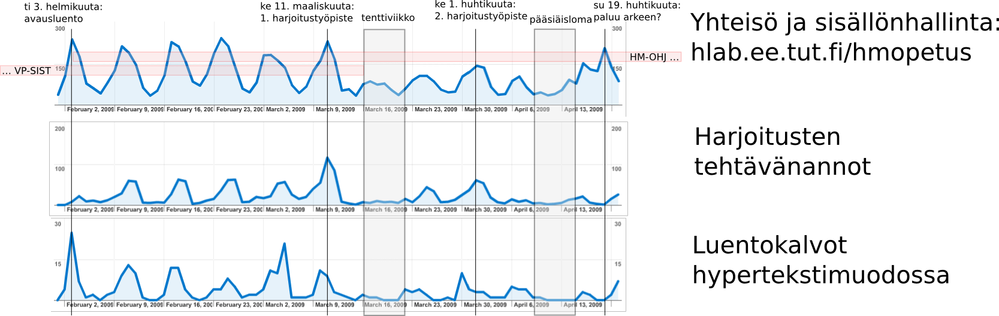
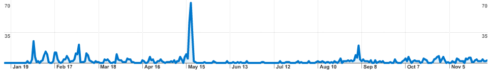
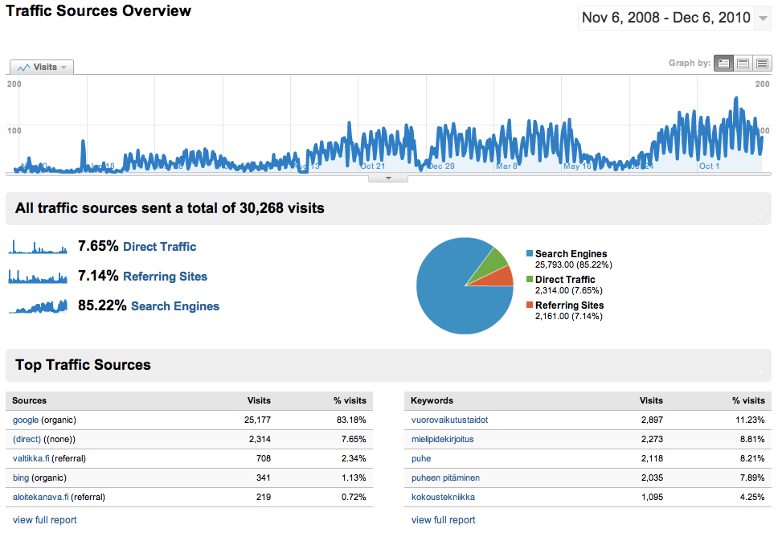

Luentoviikko 4.5. Käytön seuranta
Jukka Huhtamäki
Teema 1: Käytön seuranta
Muutama maininta esityksestä:
Vastuuvapauslauseke - Disclaimer
Lean Startup -menetelmä (ks. esimerkiksi
Lean Startup - lyhyt johdanto)
kannustaa mittaamaan ainoastaan olennaisia asioita.
Näinhän se on, turhat tai turhamaiset mittarit (vanity metrics) eivät (välttämättä)
auta ohjaamaan palvelukehitystä oikeaan suuntaan.
Yleisesti on kuitenkin niin, että jonkinlaisia mittauksia on syytä tehdä joka
tapauksessa. Jos kehittäjällä ei ole mitään tietoa käyttäjien toiminnasta,
päätöksiä tehdään usein erilaisten oletusten varassa.
Osa 1: Automatisoitu käytön seuranta
Osa 1: Automatisoitu käytön seuranta
Taustaa: ohjaus edellyttää tietoa
Tavoitteena arjen toimintatutkimus (action research) elävien koelaboratorioiden (Living Labs, ks.
Mäntylä, 2008) hengessä. Taustaa
- Historoitsija Alfred Crosby (1997): mittaus ja visualisointi mahdollistivat
nykyaikaisen tieteen räjähdysmäisen kehityksen.
- Verkkopalvelun käytön tai muun ilmiön ymmärtäminen ja etenkin ohjaaminen
edellyttää ilmiön tekemistä näkyväksi.
- Ware (2004):
Informaation visualisoinnissa (information visualisation)
tavoitteena on ilmaisuvoimaisten näkymien tuottaminen ongelmanratkaisun
ja päätöksenteon tueksi.
- Nyt tavoitteena on käyttäjien toiminnan näkyväksi tekeminen ja esimerkiksi erilaisten
väliintulojen (interventio) vaikutusten toteaminen
erilaisissa informaatiojärjestelmissä.
Taustaa: Web-hypertekstin lainalaisuuksia
Yksinkertaiset perusperiaatteet ovat sekä Webin heikkous että vahvuus.
Hyperlinkit ovat yksisuuntaisia:
<a href="http://tut.fi/">TTY</a>
Mikään yksittäinen taho ei hallitse Webiä kokonaisuutena:
edes hakukoneet eivät tavoita kaikkia Web-sivuja.
Seuraus: kun julkaiset sivun Webiin, sinulla ei
oletusarvoisesti ole mahdollisuutta tietää
kuka sivujasi lukee tai esimerkiksi tietää ketkä sivuihisi viittaavat.
Esimerkiksi blogijärjestelmissä ongelma on pyritty ratkaisemaan
takaisinviittausmekanismilla
(Linkback: RefBack, Trackback, Pingback).
Organisaatioiden intraneteissä ja muissa suljetuissa järjestelmissä tilanne
on toki hallitumpi.
Välikysymys
Miten käytön seuranta toimii?
Tekniikkaa: HTTP, palvelinohjelmointi ja Javascript
Webin tekninen tomintaperiaate tiivistettynä:
- Web on asiakas-palvelin -malliin perustuva hypertekstijärjestelmä.
- Web-selain ja palvelin kommunikoivat HTTP-protokollalla.
Selain liittää tekemiensä HTTP-pyyntöjen mukaan tietoa selaimesta ja käyttäjästä.
Lisää tietoa voidaan kerätä javascriptaamalla. Esimerkiksi seuraavat tiedot
voidaan selvittää:
Saavuit Web-osoitteesta <Ei määritelty>.
IP-osoitteesi on 130.230.133.52, joten lienet siis kaupungissa nimeltä
<!-- Geocoding failed--><ei löytynyt>. Puhut
<tuntematon kielikoodi> (en-GB).
Yleistäen voidaan viitata käyttökontekstiin. Käyttäjästä näillä keinoin
saadaan selville lähinnä äidinkieli ja sekään tieto ei ole luotettava.
Mielenkiintoista, mutta vaikuttaa työläältä. Vaihtoehtoja?
Kohti käytön seurantaa - (valitettavasti) kolmannen osapuolen välineiden avustuksella
Oikopolku: valmiit ratkaisut
Web-ohjelmoinnin perustaidot hallitseva pääsee eteenpäin edellä esitellyillä
ohjelmointiin perustuvilla keinoilla.
Toinen vaihtoehto on ottaa käyttöön valmis käytönseurantaratkaisu.
Vaihtoehtoja:
Kotimainen Snoobi
on esimerkki maksullisesta käytönseurantapalvelusta.
Tosiasia: esimerkiksi Google särähtää monen
käyttäjän silmään eikä siksi ole täysin ongelmavapaa ratkaisu.
Tapaus Hypermedian ohjelmointi
Hypermedian ohjelmointia järjestettiin opetusperiodeilla 4 ja 5:
- Luennot, harjoitukset ja harjoitustyö.
- Käytössä aikaisemmin Drupaliin perustuva yhteisö/sisällönhallintajärjestelmä; tätä nykyä käytössä on TTY-Piiri.
- Opiskelijat tekevät harjoitustyön, jonka ominaisuuksien toteuttamisesta jaetaan pisteitä harjoituksissa.
- Kuhunkin harjoituskertaan liittyy esitehtävä.
- Käytön seuranta Google Analyticsilla.
Hypermedian ohjelmointi 2009: Mitä opiskelijat tekevät ja koska?

Hypermedian ohjelmoinnin kevään 2009 toteutuskerran prujun lukukerrat
(tehtävä: etsi tentti):

Tapaus Vaikuttamistaidot.fi: Missä avoin oppimateriaalini on käytössä?
Vaikuttamistaidot.fi on nuorille suunnattu vuorovaikutteinen oppimateriaali vaikuttamisen taitojen
opiskelun tueksi. Palveluun saavutaan seuraavasti:

Testissä Google Analytics
Google Analytics on kolmannen osapuolen tarjoamien vaihtoehtojen aatelia, joten sen
läpikäynti antaa kattavan kuvan käytön seurannan mahdollisuuksista.
Pureudutaan seuraavaksi Google Analytics -palvelun toimintaan:
- Tunnuksen tekeminen.
- Uuden seurantakohteen perustaminen.
- Seurannan käyttöönotto.
- Käytön analysointi: näkymät, aikajana ja muut yksityiskohdat.
- Käyttöehdot.
- Rajoitteet.
Tosiasia: Google särähtää monen käyttäjän silmään eikä siksi ole täysin ongelmavapaa ratkaisu.
Käyttötapauksia
Kokeillaan löydämmekö Analytics-palvelun tuella vastauksia
joihinkin yleisesti askarruttaviin kysymyksiin:
- Miten aktiivista sivustoni käyttö on?
- Mitkä sivut ovat suosituimpia?
- Mihin sivuille käyttäjät yleisimmin sivustolle saapuvat? Entä mistä poistuvat?
- Mitä tietoa käyttäjät hakevat sivustolta?
- Kokevatko käyttäjät sivustollani systemaattisia käytettävyysongelmia?
- Onko sivustoni linkitetty joillekin muille sivustoille?
Mitä sinä haluaisit tietää palvelusi käyttäjistä ja heidän toiminnastaan sivustoillasi tai verkkopalvelussasi?
Neljä keskeistä kysymystä
Verkkopalveluiden (mukaan lukien sosiaalisen median) käytön analytiikan tuella pyritään
vastaamaan neljään keskeiseen kysymykseen (Croll & Sean, 2009;
Tebest, 2010):
- Mitä käyttäjät tekevät verkkopalvelussa?
- Miten käyttäjät toimivat verkkopalvelussa?
- Miksi käyttäjät toimivat verkkopalvelussa?
- Onko käyttäjien mahdollista tehdä verkkopalvelussa se mitä haluavat?
Pohdintaa
Pohdintaa käytön seurannasta:
- Google Analytics -palvelu voidaan ottaa käyttöön usein melko suoraviivaisesti, vrt.
WordPress,
Ning.com, Drupal.
- Integroitujen ratkaisujen käyttöönotto on työläämpää, mutta yksityisyys on jo taatumpi.
- Käytännön haaste: seurataanko kaikkea toimintaa kerralla vai ryhmitelläänkö kokonaisuuksiin (vrt. Hypermedian ohjelmointi)?
- Käyttäjä voi halutessaan estää Google Analytics -seurannan.
- Seuranta voi olla tarvittaessa hyvinkin yksityiskohtaista, vrt. esimerkiksi
clickdensity
tai ClickHeat.
Sisäänrakennettujen ratkaisujen verraton etu: seuranta toimii aina
eikä aiheuta käyttäjässä (turhaa) huolta.
Kohti eläviä koelaboratorioita
Pohditaan vielä tovi eläviä koelaboratorioita ja hahmotellaan suuntaa
kohti sosiaalisten verkostojen visualisointia käytön seurannan välineenä.
Kohti eläviä (verkko)koelaboratorioita
Käytön seuranta esittelee olennaisen osan elävää verkkokoelaboratoriota:
- verkkopalvelun kehittäjä on interventionisti (Järvinen ja Järvinen, 2004), joka aktiivisesti
tekee väliintuloja eli interventioita...
- ...ja toteaa niiden vaikutuksen käytän seurannan tuella.
Eräs laajempi asiayhteys moiselle toiminnalle on Living Labs -periaate (vrt. De Lama, 2006;
Mäntylä, 2008).
Käytön seuranta on suoraan yhteydessä myös innovaatiotoiminnan ytimeen verkkopalveluiden tapauksessa:
käyttöä analysoimalla on mahdollista kartoittaa käyttäjien/kuluttajien tarpeita joihin verkkopalvelulla
vastataan ja siten tuotetaan lisäarvoa (value creation) kuluttajille.
Suuntaa tulevalle
Tavoitteena sosiaalisten verkostojen visualisointi
Sosiaalisten verkostojen visualisointi
- Sosiaalisten verkostojen visualisointi on erityisen läheisessä yhteydessä käytön seurantaan:
"Images of social networks have provided investigators with new insights about network structures
and have helped them to communicate those insights to others"
(Freeman, 2000)

Kuva: SoNIA (Social Network Image Animator)
Lisää välineitä:
Gephi,
NodeXL,
Commetrix (vrt. tapaus IRIS),
Vizster,
Pajek.
Esimerkki: ryhmätyöt wikissä
Salonen ja Lähteinen (2009) tuovat näkyviin ryhmätyön tuloksena syntyneiden wikisivujen viittausrakenteen:

Tavoite: Vuorovaikutteiset raportit & sosiaalisen median analytiikka
Verkkopalvelujen käytön analyysin ohella alati tärkeämmäksi keinoksi käyttäjäymmärryksen kehittämisessä nousee sosiaalisen median analytiikka.
Esimerkiksi Twitter on avoimien rajapintojensa ja laajan suosionsa ansiosta kiinnostava kohde analyysivälineiden kehittäjille. Ärsykkeitä
analytiikkaideointiin löydät esimerkiksi seuraavista palveluista:
Myös
Facebook-analyysi onnistuu esimerkiksi Meltwater Buzzilla ja muilla nykyaikaisilla välineillä - tai suoraan Graph API:n tuella.
Parhaimmillaan verkkopalveluanalytiikka yhdistyy sosiaalisen median analytiikkaan yhden luukun periaatteella niin, että analysoija
pääsee perehtymään käyttäjin toimintaan vuorovaikutteisten visuaalisten raporttien välityksellä.
Lopuksi
Yhteenveto ja johtopäätökset:
- Yksityisyyden suojan varmistaminen koetaan joskus kehittämistä tärkeämmäksi - aiheestakin?
-
Käytön seuranta voidaan ottaa käyttöön vaikka heti, käyttäjien sosiaalisen verkoston näkyväksi tekeminen on vaikeampaa.
-
Jälkimmäinenkin onnistuu toki jo nyt, mutta edellyttää välineiden käytön opettelua ja datan koostamista käsin.
-
Ennakkoluulojen ja asenteiden taittaminen on tietenkin vaikeampaa, joskus syystäkin.
-
Huomionarvoista on, että myös reaalimaailman tilojen käytön mittarit kehittyvät alati (vrt. Otos).
Vaikka käytön seurannan voidaankin todeta olevan tämä kaikki on ihan orwellin touhuu
,
ovat sen lisäarvot verkkopalvelun kehittämisen tukena kuitenkin selvästi mahdollisia ongelmia suurempia.
{kind=link}
{kind=link}